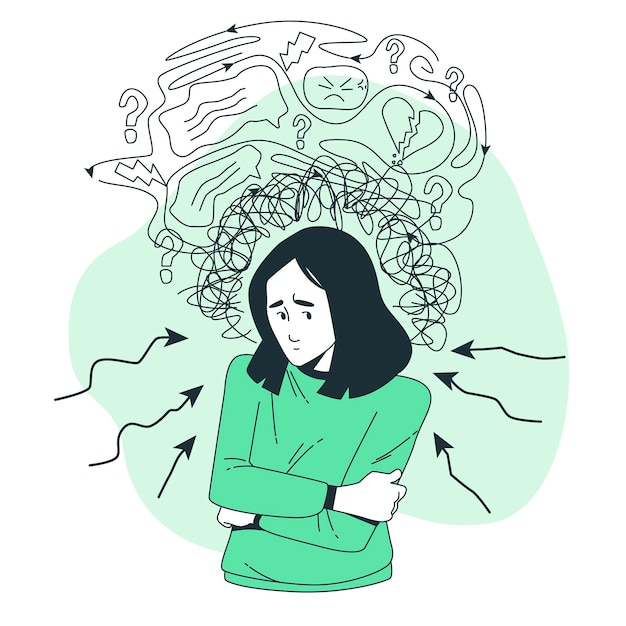

Post-traumatic stress disorder (PTSD) is a mental health condition that's triggered by a terrifying event — either experiencing it or witnessing it. Symptoms may include flashbacks, nightmares and severe anxiety, as well as uncontrollable thoughts about the event.
Most people who go through traumatic events may have temporary difficulty adjusting and coping, but with time and good self-care, they usually get better. If the symptoms get worse, last for months or even years, and interfere with your day-to-day functioning, you may have PTSD.
If you have disturbing thoughts and feelings about a traumatic event for more than a month, if they're severe, or if you feel you're having trouble getting your life back under control, talk to your doctor or a mental health professional. Getting treatment as soon as possible can help prevent PTSD symptoms from getting worse.
Common Symptoms:
PTSD symptoms are generally grouped into four types: intrusive memories, avoidance, negative changes in thinking and mood, and changes in physical and emotional reactions. Symptoms can vary over time or vary from person to person.
- Reliving the traumatic event as if it were happening again (flashbacks)
- Upsetting dreams or nightmares about the traumatic event
- Avoiding places, activities or people that remind you of the traumatic event
- Memory problems, including not remembering important aspects of the traumatic event
- Irritability, angry outbursts or aggressive behavior
- Overwhelming guilt or shame

To learn more about PTSD